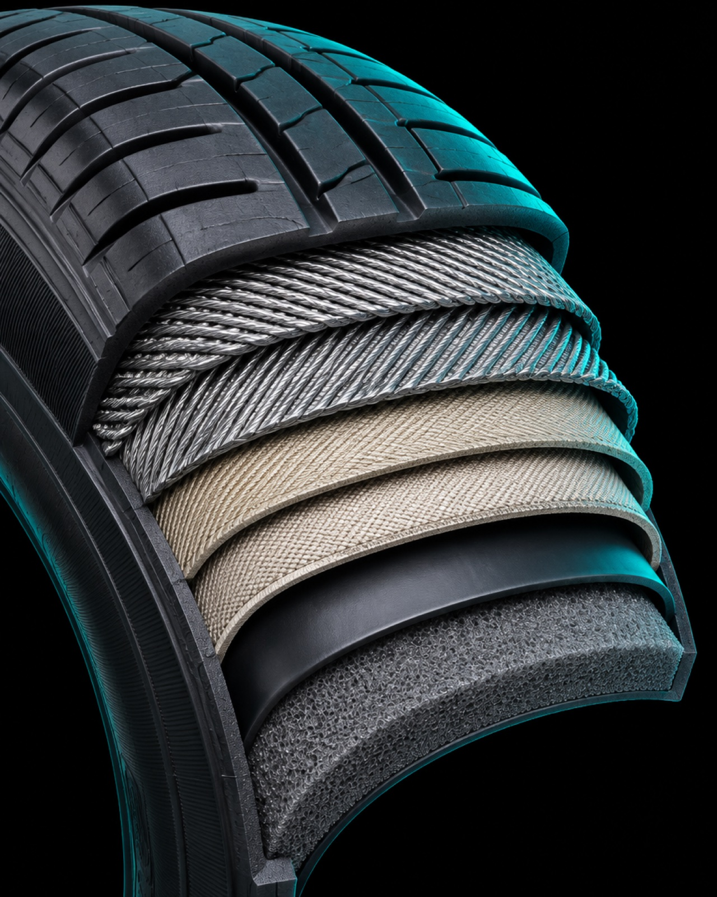

+400 kg
Massa
Um SUV plug-in leva de 200 a 400 kg a mais que o equivalente a combustão. Todo esse peso passa por quatro áreas do tamanho de uma mão.
Pneus para elétricos e híbridos
Carro elétrico pesa mais, arranca mais forte e não tem motor para esconder o barulho do asfalto. A EVTOR faz o pneu para isso, nas medidas dos carros que a América do Sul está comprando.
Uso real
Escolha o seu uso. O carro, a medida e a linha vêm junto.
Ajuste para a sua rotina. A conta mostra de quanto em quanto tempo o pneu entra no seu orçamento.
A duração do jogo é a que você informa: a EVTOR ainda não tem quilometragem de ensaio para publicar. Os valores iniciais de cada perfil são exemplos.
O problema
Três cargas que o pneu comum não foi projetado para levar.
+400 kg
Um SUV plug-in leva de 200 a 400 kg a mais que o equivalente a combustão. Todo esse peso passa por quatro áreas do tamanho de uma mão.
+30 %
O torque chega inteiro desde zero rpm. As estimativas publicadas apontam de 20% a 30% mais desgaste que no carro a combustão.
0 dB
Sem combustão, o ruído de rolagem é o som do carro. O que antes ficava escondido agora é o que o motorista ouve.

Tecnologia
Cada exigência do carro eletrificado tem uma resposta em uma camada do pneu.
Linhas
Você escolhe pela carroceria. A medida certa já vem com o índice de carga que o carro eletrificado exige.
Rolamento, molhado e ruído são as metas de projeto para a etiqueta do Inmetro. Os valores finais saem dos ensaios de homologação.
América do Sul
Chuva de verão, serra, calor e buraco. O flanco é reforçado para o impacto, e o composto é calibrado para asfalto quente e molhado.
Validação
Nenhum número deste site vira promessa antes de passar por ensaio. Esta é a sequência, e onde estamos nela.
Medidas
Emplacamentos de 2026, dados ABVE. O portfólio EVTOR cobre todos os carros desta lista.
| Carro | Tipo | Emplacados em 2026 | Medida original | Linha EVTOR |
|---|
* Medida a confirmar no manual ou na etiqueta da coluna da porta: varia por versão e ano. “jan–out” é o acumulado do ano; “out” é só outubro.
Guia
Tudo o que você precisa para trocar está escrito na lateral. No elétrico, os dois últimos códigos importam tanto quanto a medida.
Estamos formando a rede de distribuidores e frotistas para o lançamento no Brasil, com Chile, Uruguai, Colômbia e Argentina na sequência.
Falar com a EVTOR